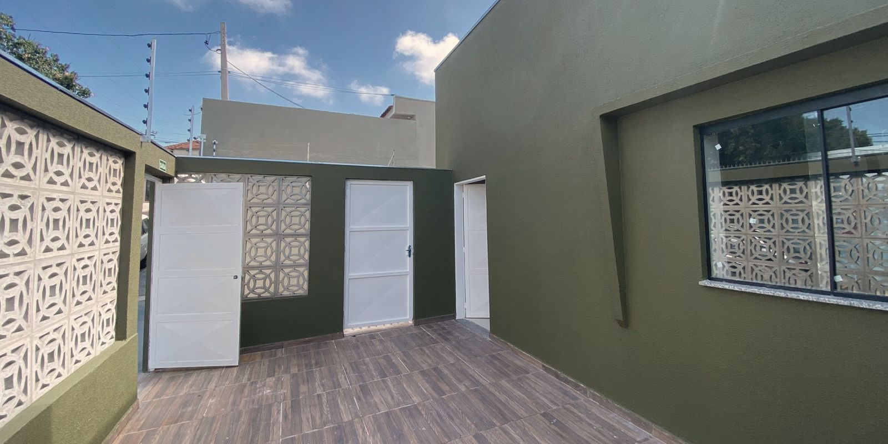

blog / imposto
Construí há mais de cinco anos. Ainda devo INSS? Depende da data.
É a decadência: passado o prazo, a Receita não cobra mais. O prazo corre a favor de quem construiu, mas a prova é dele.
Resposta curta
A Receita tem cinco anos para lançar a contribuição, contados do primeiro dia do ano seguinte. Passado o prazo, a obra é regularizada sem contribuição a recolher, desde que a data seja provada.
O que decide
O documento. Vale o que liga a construção à data, e precisa ser da época.
Atenção
A regularização continua necessária para tirar a certidão da obra. E quando só uma parte é antiga, o imposto incide sobre o resto.

Fontes
- Instrução Normativa RFB nº 2.021, de 2021
- Código Tributário Nacional, art. 173
- Manual do Sero, Receita Federal